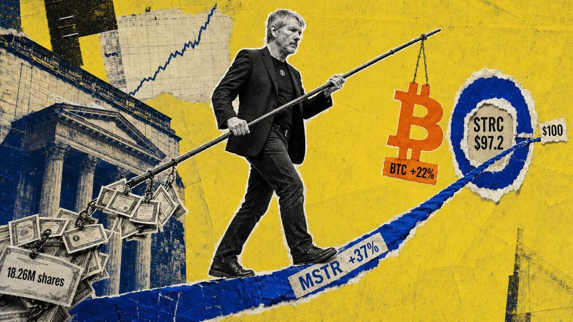
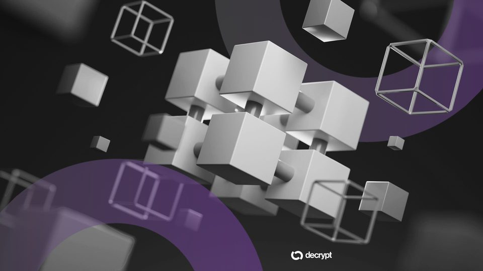
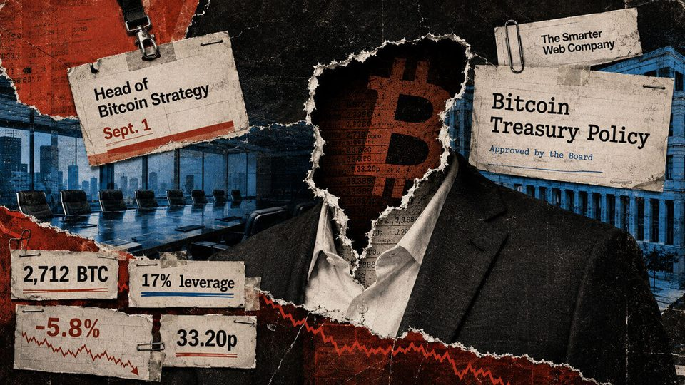

August 26, 2026
Daily headline set with source diversity, cleaned links, and local static rendering.

Strategy's MSTR quietly outperforms Bitcoin's $80,000 rally as STRC closes in on $100
Bitcoin's sharp two-week recovery, which briefly pushed its value above $80,000, has brought Michael Saylor's Strategy BTC treasury back into profit and lifted its common stock faster than the cryptocurrency. BTC's...

US Banks Join Forces to Build a Blockchain of Their Own
The BankChain Alliance aims to give smaller financial institutions access to tokenized deposits and blockchain payments through a shared network targeted for 2027.

Here's what happened in crypto today
Need to know what happened in crypto today? Here is the latest news on daily trends and events impacting Bitcoin price, blockchain, DeFi, Web3 and crypto regulation.
Shinhan and Visa team up to test stablecoin issuance and B2B settlements in South Korea
Shinhan and Visa team up to test stablecoin issuance and B2B settlements in South Korea

A 2,712 BTC treasury company just lost its Bitcoin strategy chief with no successor named
The company has not named who will inherit Jesse Myers’ implementation, analytics and investor-facing duties while directors retain overall strategy and risk authority. The post A 2,712 BTC treasury company just lost...
Bitcoin Wallets Dormant for Over a Decade Move $40M in One Week
Six wallets that slept through Bitcoin's entire boom woke up between Aug. 16 and Aug. 26, moving tens of millions in BTC.
Chainalysis estimates $457B in taxable crypto activity, says CARF misses most
The blockchain analytics firm said just 14% of the onchain activity it identified is covered by the OECD’s international crypto tax-reporting framework.
Crypto Long & Short: Tokenized equities: the model underneath the trade
Crypto Long & Short: Tokenized equities: the model underneath the trade
Bitcoin's security risk starts when one block gets far more fees than the next
New research links wider fee gaps between adjacent Bitcoin blocks to more block races and slower immediate next-block arrivals. The post Bitcoin’s security risk starts when one block gets far more fees than the next...

Solana Treasury Firm Invites Investors to Look 'Beyond the Price of SOL'
Nasdaq-listed SOL treasury company DeFi Development Corp launched a free network dashboard on Wednesday. Its pitch: judge Solana on more than just price.
SEC sends crypto custody rule overhaul to White House for review
The securities regulator’s crypto custody overhaul could clarify how investment advisers and funds hold digital assets for clients as the proposal moves through review.

Ethereum developers propose first step to protect ETH staking from quantum attacks
Ethereum developers propose first step to protect ETH staking from quantum attacks